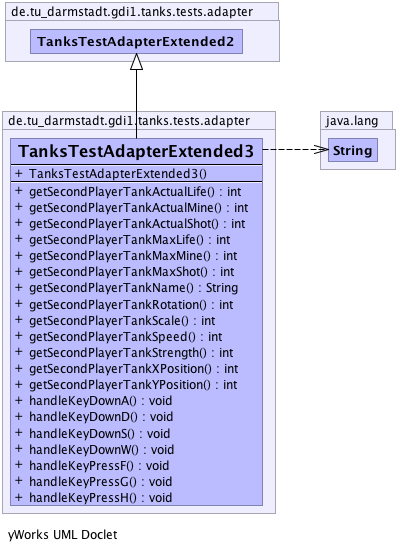

de.tu_darmstadt.gdi1.tanks.tests.adapter
Class TanksTestAdapterExtended3
java.lang.Object
 de.tu_darmstadt.gdi1.tanks.tests.adapter.TanksTestAdapterMinimal
de.tu_darmstadt.gdi1.tanks.tests.adapter.TanksTestAdapterExtended1
de.tu_darmstadt.gdi1.tanks.tests.adapter.TanksTestAdapterExtended2
de.tu_darmstadt.gdi1.tanks.tests.adapter.TanksTestAdapterExtended3
de.tu_darmstadt.gdi1.tanks.tests.adapter.TanksTestAdapterMinimal
de.tu_darmstadt.gdi1.tanks.tests.adapter.TanksTestAdapterExtended1
de.tu_darmstadt.gdi1.tanks.tests.adapter.TanksTestAdapterExtended2
de.tu_darmstadt.gdi1.tanks.tests.adapter.TanksTestAdapterExtended3
public class TanksTestAdapterExtended3
- extends TanksTestAdapterExtended2
-
-

| Methods inherited from class de.tu_darmstadt.gdi1.tanks.tests.adapter.TanksTestAdapterExtended2 |
getAmmoLeft, getLimitedAmmoAmount, getPickupCount, getPickupRotation, getPickupScale, getPickupStrength, getPickupType, getPickupXPosition, getPickupYPosition, getScattershotCount, getScattershotRotation, getScattershotScale, getScattershotStrength, getScattershotTime, getScattershotXPosition, getScattershotYPosition, getTimeLimit, getTowerActualLife, getTowerActualShotAmmo, getTowerCount, getTowerMaximumLife, getTowerMaximumShotAmmo, getTowerRotation, getTowerScale, getTowerSpeed, getTowerStrength, getTowerXPosition, getTowerYPosition, handleKeyPressL |
| Methods inherited from class de.tu_darmstadt.gdi1.tanks.tests.adapter.TanksTestAdapterExtended1 |
addHighscore, getHighscoreCount, getMineActualAmmo, getMineCount, getMineMaxAmmo, getMineScale, getMineStrength, getMineXPosition, getMineYPosition, getNameAtHighscorePosition, getShotsFiredAtHighscorePosition, getShotsFiredOfLoadedMap, getTimePassedAtHighscorePosition, getTimePassedOfLoadedMap, handleKeyPressEscape, handleKeyPressM, handleKeyPressS, loadSaveGameFromFile, resetHighscore, saveCurrentGameState |
| Methods inherited from class de.tu_darmstadt.gdi1.tanks.tests.adapter.TanksTestAdapterMinimal |
getBorderCount, getBorderXPosition, getBorderXSize, getBorderYPosition, getBorderYSize, getExplosionCount, getExplosionHeight, getExplosionSpeed, getExplosionWidth, getExplosionXPosition, getExplosionYPosition, getMapBackgroundTexture, getMapElapsedTime, getMapFiredShots, getMapMaxDuration, getMapName, getMapNextMap, getShotCount, getShotRotation, getShotScale, getShotStrength, getShotXPosition, getShotYPosition, getStateBasedGame, getStringRepresentationOfMap, getTankActualLife, getTankActualMine, getTankActualShot, getTankCount, getTankMaxLife, getTankMaxMine, getTankMaxShot, getTankName, getTankRotation, getTankScale, getTankSpeed, getTankStrength, getTankXPosition, getTankYPosition, getWallActualLife, getWallCount, getWallMaxLife, getWallRotation, getWallScale, getWallXPosition, getWallYPosition, handleKeyDown, handleKeyDownDownArrow, handleKeyDownLeftArrow, handleKeyDownRightArrow, handleKeyDownUpArrow, handleKeyPressed, handleKeyPressK, handleKeyPressN, initializeGame, isCorrectMap, loadMapFromFile, loadMapFromFileWithExceptions, runGame, stopGame |
| Methods inherited from class java.lang.Object |
clone, equals, finalize, getClass, hashCode, notify, notifyAll, toString, wait, wait, wait |
TanksTestAdapterExtended3
public TanksTestAdapterExtended3()
- Use this constructor to set up everything you need.
getSecondPlayerTankName
public java.lang.String getSecondPlayerTankName()
- Returns:
- Name des zweiten Spielerpanzers
getSecondPlayerTankMaxLife
public int getSecondPlayerTankMaxLife()
- Tank ist die Bezeichnung einen Panzer mit einem Mittelpunkt (x|y) und
einer Skalierung. Panzer muessen in der gleichen Reihenfolge gespeichert werden,
wie in der eingelesen Karte gespeichert.
- Returns:
- Aktuelle Lebenspunkte des zweiten menschlichen Panzers
getSecondPlayerTankActualLife
public int getSecondPlayerTankActualLife()
- Tank ist die Bezeichnung einen Panzer mit einem Mittelpunkt (x|y) und
einer Skalierung. Panzer muessen in der gleichen Reihenfolge gespeichert werden,
wie in der eingelesen Karte gespeichert.
- Returns:
- Aktuelle Lebenspunkte des zweiten menschlichen Panzers
getSecondPlayerTankMaxShot
public int getSecondPlayerTankMaxShot()
- Tank ist die Bezeichnung einen Panzer mit einem Mittelpunkt (x|y) und
einer Skalierung. Panzer muessen in der gleichen Reihenfolge gespeichert werden,
wie in der eingelesen Karte gespeichert.
- Returns:
- Maximale Anzahl an Schuessen des zweiten menschlichen Panzers
getSecondPlayerTankActualShot
public int getSecondPlayerTankActualShot()
- Tank ist die Bezeichnung einen Panzer mit einem Mittelpunkt (x|y) und
einer Skalierung. Panzer muessen in der gleichen Reihenfolge gespeichert werden,
wie in der eingelesen Karte gespeichert.
- Returns:
- Aktuelle Anzahl an Schuessen des zweiten menschlichen Panzers
getSecondPlayerTankMaxMine
public int getSecondPlayerTankMaxMine()
- Tank ist die Bezeichnung einen Panzer mit einem Mittelpunkt (x|y) und
einer Skalierung. Panzer muessen in der gleichen Reihenfolge gespeichert werden,
wie in der eingelesen Karte gespeichert.
- Returns:
- Maximal moegliche Anzahl an Minen des zweiten menschlichen Panzers
getSecondPlayerTankActualMine
public int getSecondPlayerTankActualMine()
- Tank ist die Bezeichnung einen Panzer mit einem Mittelpunkt (x|y) und
einer Skalierung. Panzer muessen in der gleichen Reihenfolge gespeichert werden,
wie in der eingelesen Karte gespeichert.
- Returns:
- Aktuelle Anzahl an Minen des zweiten menschlichen Panzers
getSecondPlayerTankStrength
public int getSecondPlayerTankStrength()
- Tank ist die Bezeichnung einen Panzer mit einem Mittelpunkt (x|y) und
einer Skalierung. Panzer muessen in der gleichen Reihenfolge gespeichert werden,
wie in der eingelesen Karte gespeichert.
- Returns:
- Staerke des vom zweiten menschlichen Panzers gefeuerten Schusses
getSecondPlayerTankSpeed
public int getSecondPlayerTankSpeed()
- Tank ist die Bezeichnung einen Panzer mit einem Mittelpunkt (x|y) und
einer Skalierung. Panzer muessen in der gleichen Reihenfolge gespeichert werden,
wie in der eingelesen Karte gespeichert.
- Returns:
- Geschwindigkeit des zweiten menschlichen Panzers
getSecondPlayerTankRotation
public int getSecondPlayerTankRotation()
- Tank ist die Bezeichnung einen Panzer mit einem Mittelpunkt (x|y) und
einer Skalierung. Panzer muessen in der gleichen Reihenfolge gespeichert werden,
wie in der eingelesen Karte gespeichert.
- Returns:
- Aktuelle Rotation des zweiten menschlichen Panzers
getSecondPlayerTankScale
public int getSecondPlayerTankScale()
- Tank ist die Bezeichnung einen Panzer mit einem Mittelpunkt (x|y) und
einer Skalierung. Panzer muessen in der gleichen Reihenfolge gespeichert werden,
wie in der eingelesen Karte gespeichert.
- Returns:
- Aktuelle Skalierung des zweiten menschlichen Panzers
getSecondPlayerTankXPosition
public int getSecondPlayerTankXPosition()
- Tank ist die Bezeichnung einen Panzer mit einem Mittelpunkt (x|y) und
einer Skalierung. Panzer muessen in der gleichen Reihenfolge gespeichert werden,
wie in der eingelesen Karte gespeichert.
- Returns:
- Aktuelle x-Position des zweiten menschlichen Panzers
getSecondPlayerTankYPosition
public int getSecondPlayerTankYPosition()
- Tank ist die Bezeichnung einen Panzer mit einem Mittelpunkt (x|y) und
einer Skalierung. Panzer muessen in der gleichen Reihenfolge gespeichert werden,
wie in der eingelesen Karte gespeichert.
- Returns:
- Aktuelle y-Position des zweiten menschlichen Panzers
handleKeyDownW
public void handleKeyDownW()
- This Method should emulate the pressing of various keys.
This should make the playertank shoot.
Diese Methode emuliert das Druecken beliebiger Tasten.
(Dies soll es ermoeglichen, das Schiessen des Spielerpanzers
zu testen)
- Parameters:
updatetime - : Zeitdauer bis update-Aufrufinput - : z.B. Input.KEY_K, Input.KEY_L
handleKeyDownA
public void handleKeyDownA()
- This Method should emulate the pressing of the a key.
This should make the second player tank turn counter clockwise.
handleKeyDownS
public void handleKeyDownS()
- This Method should emulate the pressing of the s key.
This should move the second player tank backward.
handleKeyDownD
public void handleKeyDownD()
- This Method should emulate the pressing of the d key.
This should make the second player tank turn clockwise.
handleKeyPressG
public void handleKeyPressG()
- This Method should emulate the pressing of the g key.
This should make the second player tank fire.
handleKeyPressH
public void handleKeyPressH()
- This Method should emulate the pressing of the h key.
This should make the second player tank fire a scattershot.
handleKeyPressF
public void handleKeyPressF()
- This Method should emulate the pressing of the f key.
This should make the second player tank plant a mine.